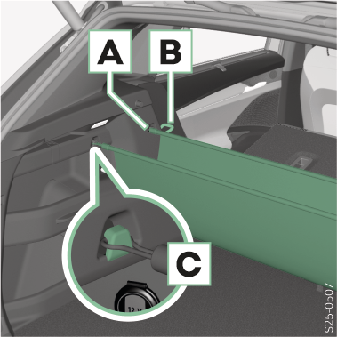
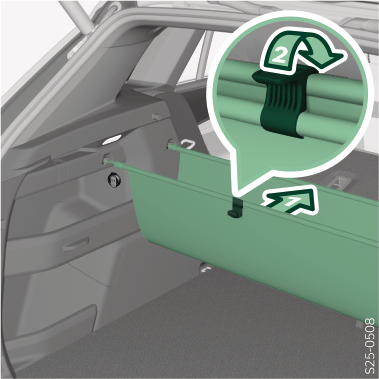

La charge maximale autorisée du vide-poches est de 3 kg.
Suspendre

Suspendre le vide-poches aux points de fixation A, B ou C.
Plier

Placer la barre arrière contre la barre avant et bloquer avec les ergots.